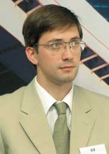

|  | В интервью редактору отдела аппаратных средств "BYTE/Россия" Александру Николову директор департамента систем хранения данных НР Россия Дмитрий Ретюнский рассказывает о нынешней ситуации на рынке систем хранения и о стратегии HP на этом рынке. |
"BYTE/Россия": Дмитрий, предваряя предметный разговор о системах хранения HP и обо всем, что с ними связано, хотел бы попросить Вас поделиться экспертной оценкой этого сектора в целом: каковы, на Ваш взгляд, наиболее интересные и значимые результаты и тенденции последних двух лет и перспективы на будущее?
Дмитрий Ретюнский: Если говорить о тенденциях и о нашем прогнозе развития рынка в период с 2004 по 2006 г., то сегмент систем хранения данных, пожалуй, можно считать одним из наиболее активно развивающихся рынков. Если говорить о направлениях развития в глобальном плане, то сейчас наблюдается переход от систем непосредственного хранения информации - таких, как обычные дисковые массивы с некоторой базовой функциональностью для простого хранения данных, - к неким более сложным системам, которые позволяют внутри себя, без привлечения сторонних дополнительных модулей и средств, решать задачи, в большей степени привязанные к бизнес-процессам предприятий.
Что касается основных игроков на рынке, то они всем хорошо известны - это Hitachi Data Systems, это компании EMC, IBM, Sun, которая является OEM-партнером HDS, и компания Hewlett-Packard.
Первая очевидная тенденция сегодняшнего рынка - тенденция роста: рынок растет, и прирост, по разным оценкам, составляет от 15 до 25% в год. Темпы роста основных производителей укладываются в эти рамки. Другая важнейшая тенденция - повышенный интерес к системам управления жизненным циклом информации и, соответственно, к технологиям ILM, где HP выступает как один из ведущих игроков рынка. Кроме того, стоит отметить дальнейшее развитие модульных систем хранения данных уровня предприятия или центра обработки данных. В то же время наблюдается тенденция к постепенному уходу от простейших ленточных систем хранения и переход к некоторым комбинированным решениям на базе дисковых массивов, таким, как виртуальные библиотеки.
"BYTE/Россия": Как Вы полагаете, наблюдаемый рост носит экстенсивный характер - одни решения заменяются другими, более мощными в техническом плане, или же это интенсификация развития систем хранения и соответственно переход на новый качественный уровень, связанный с внедрением новых идеологий?
Д. Р.: Здесь, безусловно, присутствуют обе составляющие - мы видим и экстенсивный рост (например, за счет наращивания емкости уже существующих систем хранения данных), и качественные изменения - новые технологические решения, позволяющие не просто получить дополнительное дисковое пространство, но унифицировать и оптимизировать процессы хранения и использования данных, сделать их управляемыми, чтобы в конечном счете обеспечить заказчику гарантированную доступность данных в зависимости от определенных им критериев и снижение стоимости хранения. Например, анализ уже существующих систем показывает, что значительную долю объема хранимых данных - в ряде случаев до 60% - составляет так называемая справочная информация, используемая крайне редко. В подобных случаях заказчики используют свою инфраструктуру совершенно нерационально. Наши новые решения позволяют высвободить место в высокопроизводительных и достаточно дорогих дисковых системах для тех данных, которые используются каждый день и доступность и сохранность которых критична для предприятия. Мы видим основную тенденцию именно в развитии подобных решений - прошло то время, когда заказчики просто покупали дисковое пространство, теперь все чаще и чаще, в том числе и в нашей стране, они смотрят на такие показатели, как стоимость владения оборудованием и эффективность его использования. Кроме того, полагаю, недалек тот день, когда встанет вопрос об информационном регулировании деятельности компаний, подразумевающем хранение всего внутреннего документооборота в течение определенного законом срока, что потребует дополнительных мощностей и расширения систем хранения.
"BYTE/Россия": Таким образом, можно сказать, что в сознании потребителей фактически произошел революционный перелом?
Д. Р.: Я бы сказал, что мы сейчас находимся на стадии этого перелома. Количество оборудования, проданного в рамках стратегии ILM, в Европе и США растет буквально в геометрической прогрессии. На текущий момент и у наших российских заказчиков существует серьезный интерес к решениям подобного рода, так что, думаю, реальные внедрения не за горами.
"BYTE/Россия": Полагаю, читателям будет интересно узнать о практических результатах, достигнутых HP на рынке систем хранения данных, за прошедшие год-полтора. Не могли бы Вы озвучить некоторую статистику ваших достижений?
Д. Р.: Здесь я бы хотел уйти от традиционной формы ответа, в частности, от глобального обзора мирового рынка, к непосредственно российскому рынку, что, на мой взгляд, более интересно. Итак, по оценкам IDC, суммарная доля Hewlett-Packard на текущий момент достигает 39% всего российского рынка систем хранения. За нами следует EMC с долей примерно в 21% и далее остальные игроки.
Из основных тенденций, которые мы можем сейчас рассматривать, назовем такую: практически все компании этого сегмента открыли в России свои представительства, и все они активно расширяются и растут. Если говорить о российском представительстве HP, можно отметить, что в последнее время были сделаны серьезные инвестиции в развитие продаж систем хранения данных. Что касается относительных цифр, рост бизнеса HP в России в секторе систем хранения за период с 2003 по 2004 г. составил примерно 32% при совокупном росте рынка (по нашим оценкам) около 25%. Таким образом, можно сказать, что на текущий момент мы опережаем развитие рынка, а на нынешний год мы планируем прирост в 47%, и это не фантазии, а вполне реальные цифры.
Из наиболее хорошо продаваемых решений HP можно назвать наши новые, недавно анонсированные дисковые массивы среднего уровня StorageWorks Enterprise Virtual Array, новые дисковые массивы уровня предприятия - StorageWorks XP12000 и объявленную совсем недавно модель XP10000, системы резервного копирования EML и ESL. И, конечно же, мы ожидаем существенного роста продаж, как в штучном, так и в денежном выражении, решений на базе ILM. Думаю, первые продажи состоятся уже в текущем году.
Если говорить о традиционных решениях (ленточные системы, дисковые массивы начального уровня), которые HP давно и успешно продает, то здесь также наблюдается рост.
"BYTE/Россия": Исходя из логики предыдущих ответов, напрашивается вопрос о глобальных целях компании на рынке систем хранения данных.
Д. Р.: Основная цель для компании HP вообще и для нас в частности - предоставить нашим заказчикам решения, максимально учитывающие их интересы. Сегодня существуют команды специалистов, имеющих дело непосредственно с заказчиками и помогающих им проанализировать, как те или иные решения будут работать в их бизнес-инфраструктуре. Мы постепенно уходим от решения сиюминутных ИТ-задач и внедрения простых ИТ-решений к такому понятию, как бизнес-консалтинг. В реальной жизни это выглядит следующим образом: при работе с заказчиком мы прежде всего выявляем его бизнес-потребности. После этого мы совместно анализируем эффективность использования ИТ-инфраструктуры, находим в ней узкие места, моделируем ее возможные изменения таким образом, чтобы минимизировать в дальнейшем затраты предприятия на поддержку своей ИТ-инфраструктуры за счет повышения эффективности ее использования. Здесь мы говорим и об упоминавшихся уже ILM-решениях, и об оценке и выдаче конкретных технических рекомендаций для уже существующей инфраструктуры, что особенно актуально для многовендорных заказчиков. При этом мы даем не столько рекомендации на тему, что можно купить у HP, сколько общее видение системы и предложения, что нужно изменить ради того, чтобы инфраструктура заказчика работала максимально эффективно. Как компоненты решений мы, в частности, используем системы на базе продуктов HP Storage Essential и HP OpenView, которые позволяют заказчику строить сквозную систему анализа предприятия, начиная с анализа ИТ-процессов и заканчивая анализом бизнес-процессов. После внедрения данных решений заказчик получает, с одной стороны, полную прозрачность своей инфраструктуры, с другой - возможность динамически менять (причем без дополнительных инвестиций) свою ИТ-инфраструктуру под текущие и будущие бизнес-потребности.
"BYTE/Россия": То есть в некотором роде все это можно описать как плавный переход от решения каких-то типовых ИТ-задач к оптимизации бизнес-процессов заказчика?
Д. Р.: В целом это так. Но зачастую реструктуризация бизнес-процессов - задача крайне непростая. Достаточно часто наши заказчики уже имеют сложившиеся и прочно устоявшиеся внутренние правила, поменять которые далеко не всегда возможно. Поэтому наши решения позволяют выстроить ИТ-инфраструктуру таким образом, чтобы она максимально отвечала бизнес-потребностям предприятия, не требуя при этом моментальных кардинальных изменений.
"BYTE/Россия": И какие же стратегические задачи HP ставит себе на пути к озвученной выше цели?
Д. Р.: Первоочередной моей задачей была реорганизация отдела продаж систем хранения данных для достижения максимальной эффективности работы. На текущий момент внутри нашего отдела существует три основных направления, охватывающих весь спектр продуктов и решений: системы хранения данных корпоративного уровня, коммерческие системы хранения данных и ПО, используемое в системах хранения данных.
Каждый из членов нашей команды отвечает за целый ряд вопросов, связанных с продвижением продуктов на рынок, экспертным сопровождением и непосредственной работой с заказчиками. Впрочем, эти задачи характерны для любого производителя, а вот уникальным можно считать то, что основная фактическая задача сотрудника - работа с нашими заказчиками и партнерами для разъяснения того, каким образом новые решения НР в области хранения данных, в частности, RISS, решения на базе StorageWorks Grid, могут быть использованы в инфраструктуре заказчика. Иначе говоря, главная концептуальная задача - изменить представление о системах хранения как о некоторых вспомогательных устройствах, сместить его в сторону понимания того, что они составляют часть инфраструктуры, обеспечивающую эффективное выполнение бизнес-процессов. Именно бизнес-процессы, а не ИТ-потребности, на наш взгляд, будут превалировать в ближайшем обозримом будущем.
Достигается это несколькими разными способами, и здесь особо хотелось бы отметить специальную партнерскую программу, которую мы объявили в начале года, - Storage Elite Partners Program. В ее рамках мы создали клуб по интересам для партнеров, наиболее, на наш взгляд, квалифицированных, имеющих большой опыт продаж систем хранения данных и готовых, как мы полагаем, продвигать новую концепцию. На данный момент таких компаний четыре - "Ай-Теко", "Комплит", TopS и "Инлайн Групп". Они входят в число основных партнеров HP в области систем хранения данных; до конца года к ним добавятся еще два партнера.
В рамках других инициатив HP активно проводит и принимает участие в целом ряде мероприятий как технической, так и бизнес-направленности. Например, ближайшие два мероприятия, в которых мы намерены принять участие, это Storage Expo и IDC-конференция. Причем, в отличие от предыдущих лет, мы будем на них выступать не только с какими-то обновлениями в продуктовых линейках, но и с конкретными примерами того, как бизнес может использовать ИТ-решения HP для повышения своей эффективности.
В целом можно сказать, что все наши усилия в работе как с заказчиками, так и с партнерами направлены на то, чтобы не только рассказать о новых концепциях, но и показать, как они работают. Более того, мы пошли дальше в данном направлении: в портфеле наших предложений появился так называемый бизнес-консалтинг по использованию ИТ-решений. В консалтинговых проектах принимают активное участие практически все подразделения российского представительства НР, такие, как отдел систем хранения данных, консалтинг, сервисное подразделение и т. д., причем в проектах рассматриваются решения не только HP. Иными словами, мы оказываем содействие заказчику в анализе его инфраструктуры, в хорошем понимании происходящих процессов и выработке рекомендаций по ее улучшению независимо от того, на оборудовании какого производителя данная инфраструктура базируется.
"BYTE/Россия": Что ж, цели определены, задачи поставлены, осталось всего ничего - выбрать верный путь к победе. В багаже HP достаточно концептуальных подходов для построения эффективной ИТ-инфраструктуры предприятия - это и Adaptive Enterprise, и Information Lifecycle Management, и StorageWorks Grid. В той или иной степени они знакомы нашим читателям по нашим прежним публикациям, однако я попрошу Вас вернуться к ним, на этот раз исходя из специфики решения сформулированных выше задач.
Д. Р.: Если говорить о подходе Adaptive Enterprise, в рамках которого HP работает последние годы, прежде всего стоит напомнить, что основная задача Adaptive Enterprise - это оптимизация управления бизнес-процессами в зависимости от поставленных целей с помощью ИТ-инфраструктуры. Если рассматривать конкретные задачи, которые ставит перед собой бизнес и которые должна обеспечивать ИТ-инфраструктура, то можно выделить ряд направлений. Прежде всего это доступность данных. Сейчас существует подход, согласно которому данные можно разделить на две категории - актуальная информация, которая используется в режиме реального времени и критично необходима для бизнеса, и справочная информация, которая нужна время от времени или не нужна вообще. В зависимости от типов и ценности данных разнится и подход к их обработке и хранению: данные первого типа хранятся в высоконадежных и производительных системах с использованием решений корпоративного уровня на базе высокоскоростных дисковых массивов класса XP и EVA, обеспечивающих самую высокую надежность хранения и скорость работы. Немаловажно отметить, что эти системы обладают также устойчивостью к сбоям, отказам и катастрофам. Добавлю еще, что если на базе массивов XP разнесенные региональные центры обработки данных в России строились уже давно, то на данный момент HP - единственная компания, предлагающая решения подобного класса и на базе массивов среднего уровня EVA. Подобные системы предоставляют заказчику гарантированную доступность данных - вплоть до разнесения ЦОД на разные континенты; гарантированную производительность - в XP и EVA есть средства обеспечения заданной производительности; гибкость в использовании, удобство и простоту администрирования. Система EVA вообще уникальна в своем классе, так как в ней решены такие задачи, зачастую нетривиальные для администраторов подобных систем, как автоматическая балансировка нагрузки, автоматическое наращивание емкости массива и многое другое.
Если говорить об информации второго типа, то здесь существует несколько решений. Прежде всего это наш новый продукт Reference Information Storage System, или RISS, это File System Extender (FSE), это продукты, которые принадлежат к ILM-решениям, и традиционные решения для архивирования данных. Подобные решения позволяют заказчику на основе заданных политик управлять хранением данных. В зависимости от критериев, которые формулирует заказчик и которые определяются его бизнес-процессами, они фактически могут автоматизировать процесс хранения и утилизации данных - поступающая актуальная информация изначально хранится на главном дисковом массиве, затем, в процессе изменения ее статуса, перемещается на вторичный массив с более низкой стоимостью хранения, далее, по достижении определенных уровней критериев, переносится в RISS, а затем на магнитную ленту. Таким образом, реализуется схема многоуровневого хранения и защиты данных, обеспечивающая, помимо прочего, многократное снижение стоимости владения информацией. Подобные решения уже апробируются, и в ближайшее время мы собираемся установить у себя подобную систему для демонстрации ее возможностей партнерам и заказчикам.
Еще один важный элемент нашей стратегии - технология StorageWorks Grid, которая начинает сейчас активно внедряться: в частности, RISS - яркий ее пример. Если искать наиболее доходчивые аналогии, то в общих чертах ее можно сравнить с распределенными вычислениями. Суть StorageWorks Grid заключается в том, что вместо традиционного дискового массива заказчик получает интеллектуальную систему. Формально данные системы можно описать как множество однотипных кубиков, представляющих собой реализацию идеологии Storage Smart Cells. Каждая ячейка включает в себя интеллектуальный блок, оперирующий данными на стадии их получения и обеспечивающий анализ, индексацию и безопасность данных, и дисковую подсистему для хранения информации. Фактически StorageWorks Grid - это вычислительная система, обеспечивающая заданную производительность при обработке данных, и непосредственное хранилище информации. Наличие связи между ячейками позволяет проводить практически мгновенный поиск информации даже в сверхбольших хранилищах. Кроме того, в случае исчерпания емкости какой-либо ячейки система способна самостоятельно перестроиться и перераспределить нагрузку на другие ячейки. Учитывая решаемые задачи и рост их потребностей, система просто добавляет новые ячейки и переносит на них необходимые данные, попутно обновляя информацию о ее размещении. Если свободных ячеек нет, система может консолидировать информацию в ячейках с более низким приоритетом, высвободив часть из них под текущие нужды.
"BYTE/Россия": А насколько универсальна концепция StorageWorks Grid в плане размеров предприятия - есть ли смысл и возможность использовать ее, например, на малых (в понятиях Европы и США) предприятиях?
Д. Р.: Существуют определенные рекомендации по использованию таких решений - на данный момент считается, что решение RISS актуально для предприятий с числом пользователей электронной почты не менее 200, а это уже достаточно солидная компания. Однако темпы прироста объемов информации постоянно увеличиваются, так что не за горами то время, когда подобные решения будут применяться и в малом бизнесе. Стратегический план HP заключается в том, чтобы постепенно перевести все свои дисковые массивы на технологию Grid, что позволит превратить системы хранения данных в высокоинтеллектуальные системы управления хранением данных.
"BYTE/Россия": С общим положением дел мы более-менее разобрались, давайте теперь перейдем к нашей действительности. Дмитрий, как бы Вы оценили российский рынок систем хранения?
Д. Р.: С точки зрения времени вывода новых продуктов на рынок несколько лет назад наблюдалось некоторое отставание, связанное с необходимостью оценки и восприятия новых технологий заказчиками, - зачастую возможности оборудования опережали их реальные потребности. Однако сейчас ситуация изменилась: благодаря бурному развитию рынка все чаще и чаще требования заказчиков идут вровень с развитием систем хранения данных. Кроме того, постепенно повышается уровень приобретаемых систем - если несколько лет назад дисковые массивы начального уровня MSA1000 считались у нас достаточно серьезными решениями, то сегодня мы ставим вопрос о переводе части систем среднего уровня семейства EVA из чисто интеграторской сферы в дистрибьюторскую.
Если же говорить о российском рынке в целом, то можно сказать, что он в определенном смысле уникален - несмотря на долгую раскачку, наши заказчики всегда покупают только новейшие решения и вкладывают деньги в перспективные направления.
"BYTE/Россия": А чего HP ждет от российского сегмента в обозримом будущем?
Д. Р.: Поскольку Россия интегрируется в мировое экономическое пространство, мы ожидаем, что рынок систем хранения будет расти и дальше. Полагаю, что общий прирост в этом году составит 27-30%. Мы же рассчитываем, как и прежде, расти с опережением рынка и получить около 47%. Кроме того, с нашей точки зрения, намечается переход от простых систем к решениям среднего и высшего уровня.
"BYTE/Россия": Дмитрий, из всего услышанного складывается впечатление, что компания HP в большей степени ориентируется на заказчиков из частного сектора. А как обстоят дела в плане сотрудничества с государственными структурами?
Д. Р.: Здесь за последний год у нас произошли значительные изменения, в том числе было реорганизовано подразделение по работе с государственными учреждениями. Обобщая, можно сказать, что наше сотрудничество с государственными органами идет по нарастающей - мы достаточно тесно сотрудничаем и с региональными властями всех уровней, и с федеральными структурами и ведомствами. Таким образом, несмотря на то, что основная часть нашего бизнеса на текущий момент связана с частными предприятиями, сотрудничество с государственными учреждениями активно развивается, и это крайне важный для нас сегмент рынка, мы уделяем его развитию много внимания и вкладываем в этот процесс много сил и средств.
"BYTE/Россия": Можете ли Вы привести примеры каких-нибудь особенно интересных внедренческих проектов, в которых HP довелось участвовать?
Д. Р.: Хочу привести всего несколько примеров: компания "Рамэнка", известная широкой публике как сеть супермаркетов "Рамстор", внедрила решение на базе нашего дискового массива. Сеть магазинов "Копейка" реализовала в 2004 г. большой проект, включавший в себя не только наши системы хранения, но и серверы, и инфраструктурные решения. Можно также упомянуть один из крупнейших ритейловых банков Украины, внедривший очень мощное комплексное решение, благодаря которому он может стать лидером именно с точки зрения управления бизнес-процессами.
Хотелось бы подчеркнуть, что число подобных реализованных проектов довольно велико - только за II квартал текущего года было продано более десяти систем класса ХР, что редкость не только для России, но и для всего региона EMEA в целом. Но дело в том, что со многими заказчиками мы связаны соглашениями о неразглашении информации, золотое правило HP - ничего не публиковать без официального разрешения.
"BYTE/Россия": Хотелось бы еще поговорить об основных направлениях развития дисковых систем хранения НР, в частности, о семействах StorageWorks EVA и XP12000 Disk Array.
Д. Р.: В середине текущего года были представлены системы среднего уровня из семейства Enterprise Virtual Array - модели EVA 4000, EVA 6000 и EVA 8000, а совсем недавно было объявлено о выходе новой модели дискового массива высшего уровня - XP10000. С ее появлением заказчики получили возможность использовать практически полнофункциональные решения уровня предприятия в условиях ограниченного ИТ-бюджета, не рассчитанного на приобретение XP12000. Хотелось бы отметить, что практически все функциональные возможности этой модели, в частности, мультивендорная интеграция дисковых массивов в единое пространство хранения, полностью аналогичны XP12000. С нашей точки зрения новая модель наилучшим образом подходит для построения резервного центра обработки данных - разница по стоимости между XP12000 и XP10000 при сравнимых конфигурациях составляет 10% и более, что, учитывая абсолютную стоимость систем хранения, совсем немало.
Если рассматривать флагманскую модель среднего уровня EVA 8000, то можно сказать, что у HP сейчас, пожалуй, самая плотная и широкая линейка систем хранения, позволяющая заказчику выбрать именно то, что ему нужно, не ограничивая функциональность систем из-за их чрезмерной стоимости и не тратя денег на приобретение избыточных мощностей. Например, та же EVA 8000 позволяет, как и XP12000, строить разнесенные центры обработки данных, при этом у конкурентов решения с подобным функционалом доступны только в высшей категории и по совершенно другим ценам.
В нижнем сегменте в ближайшем будущем планируется выпуск нового дискового массива с более высокой производительностью и расширенной функциональностью. Более полная информация будет доступна после его официального объявления.
Определенные изменения ожидаются в разделе ПО - планируется ряд обновлений для расширения функциональных возможностей систем хранения данных. Собственно говоря, мы продолжаем работу над всеми нашими продуктами, и если посмотреть на линейку обновлений, то можно заметить, что буквально каждый месяц мы предлагаем заказчикам какой-то новый продукт или обновление уже существующего продукта, с тем чтобы он максимально соответствовал бизнес-потребностям. Более того, можно сказать, что в зависимости от требований заказчика наша компания готова инвестировать в доработку систем под их конкретные нужды, и мы уже имели дело с подобными проектами.
"BYTE/Россия": Несмотря на бурное развитие дисковых систем, "старая добрая лента" все еще не собирается сдавать позиций, причем, надо отметить, не в последнюю очередь стараниями HP. Что бы Вы могли сказать о будущем ваших ленточных систем?
Д. Р.: Обновления наших продуктовых линеек касаются в том числе и ленточных накопителей. В частности, мы обновили накопители Ultrium среднего класса, постоянно совершенствуются и решения для автоматизации архивирования, например, ленточные библиотеки и ленточные автозагрузчики. Кроме того, мы выпустили обновление ленточных DAT-накопителей с интерфейсом USB 2.0, что обеспечит пользователям, в первую очередь мобильным и удаленным, сохранность их данных. Мы считаем, что это достаточно крупный сегмент рынка и на текущий момент для заказчиков из данной сферы "лента" - одно из немногих решений, способных обеспечить простое в использовании, проверенное временем, гарантированное хранение и восстановление данных.
Можно сказать, что мы чувствуем потребности наших клиентов, и все наши решения в области ленточных систем хранения данных идут с небольшим опережением этих потребностей, чтобы обеспечить заказчикам не только сегодняшний их уровень, но и определенный запас на будущее.
"BYTE/Россия": Каков, по Вашим прогнозам, срок жизни ленточной технологии хранения? Будет ли она еще актуальна в течение пяти-семи лет?
Д. Р.: С теми планами развития, которые мы сейчас видим и которые поддержаны HP и другими крупнейшими производителями, ленточная технология будет актуальна как минимум еще 10-15 лет. Если взять технологии, то видно, что удвоение емкости хранения происходит, в зависимости от технологии, раз в год или два года, и этот показатель неплохо коррелирует с ростом емкости дисковых накопителей, что позволяет заказчикам организовывать процедуры архивного хранения данных в соответствии с их бизнес-требованиями. Вместе с тем, учитывая особенности некоторых решаемых задач и потребности заказчиков в минимизации времени архивирования, мы предлагаем некоторые инновационные решения, в частности, систему Virtual Library System - дисковый массив с эмуляцией работы ленточной библиотеки. Такое решение особенно актуально для заказчиков с большим объемом архивируемой информации и жесткими временными ограничениями на этот процесс. В общих чертах оно позволяет очень быстро создать архивную копию, а затем с высокой скоростью переместить ее на ленту, максимально эффективно используя ленточную систему хранения данных. Особенность VLS в том, что с ее помощью заказчик может создать до 16 виртуальных библиотек с 64 ленточными приводами, что позволит построить максимально эффективную систему резервного копирования данных, в том числе используя ранее приобретенное ПО резервного копирования от других производителей.
"BYTE/Россия": И, наконец, последнее, о чем мы сегодня поговорим, - это управляющее ПО, вторая после "железа" и, возможно, даже более важная составляющая систем хранения данных. Что нового в этой области?
Д. Р.: Сферу ПО можно разделить на несколько направлений. Мы начнем снизу - с ПО для резервного копирования данных. Здесь у нас имеется продукт под названием HP OpenView Storage Data Protector (текущая версия 5.5). Это относительно новая версия продукта, представленная в нынешнем году, и в нее вошли практически все последние разработки в области резервного копирования: практическое отсутствие затрат времени на резервное копирование с помощью использования технологий on-line backup, open file backup, zero-downtime backup, Microsoft Volume Shadow Copy Service (VSS) и т. д. По соотношению цена/функциональность HP OpenView Storage Data Protector считается ведущим продуктом на рынке. Более того, и это особенно приятно отметить, перечисленные выше технологии резервного копирования данных - не просто список потенциальных возможностей, они реально востребованы и используются нашими заказчиками.
Следующий тип - это ПО, используемое непосредственно на дисковых массивах. Назовем здесь хорошо известный продукт HP StorageWorks Command View XP Advanced Edition (CV XP AE), HP StorageWorks Snapshot XP, HP StorageWorks XP Data Shredder, HP Metrocluster with HP StorageWorks Continuous Access EVA, HP StorageWorks Cluster Extension EVA (CLX EVA) и другие версии управляющего ПО, которые позволяют проводить конфигурирование и администрирование массивов. ПО для систем хранения данных продолжает развиваться, весной этого года произошло знаменательное событие, связанное с выходом нового продукта Storage Essentials, пришедшего на смену Storage Area Manager. Этот продукт позволяет решать задачи построения гетерогенных систем хранения данных на оборудовании разных производителей, прогнозирования и управления ресурсами сети хранения данных, управления приложениями и т. п. Его отличительная особенность в том, что он работает не только с дисковыми массивами HP, но и с продуктами других вендоров: установив Storage Essentials, заказчики смогут управлять массивами EMC, HDS, IBM, HP и других производителей, снизив тем самым издержки на поддержание ИТ-инфраструктуры.
Кроме того, из интересных обновлений могу назвать Reference Information Manager - интерфейсный программно-аппаратный продукт, который позволяет применять RISS не только с системой электронной почты, но и (стараниями наших программных партнеров) с разнообразными сторонними программными решениями. На данный момент около 20 партнеров заняты разработкой новых версий RIM для обеспечения совместимости с их продуктами. В ближайшее время мы ожидаем выхода версий RIM для построения интерфейса с наиболее популярными СУБД, CRM-системами и другими программными продуктами. Цель данных решений - разгрузить основную базу данных от справочной информации, обеспечивая высокую производительность без потери ее онлайновой доступности. Данные продукты позволят заказчику забыть о необходимости постоянного обновления серверной платформы и снизить количество плановых остановок систем.
Кроме того, в рамках технологии ILM можно отметить программный продукт File System Extender, который позволяет организовать управление хранением данных на основе политик. В отличие от программно-аппаратных RISS и RIM, FSE - это чисто программный продукт и удобен тем, что оптимизирует хранение данных в рамках уже существующей распределенной инфраструктуры: на каждом из серверов или даже на каждой рабочей станции можно задать политики, в соответствии с которыми будет осуществляться процесс хранения информации. Это решение позволит разгрузить ИТ-персонал компании от выполнения рутинных задач и избавит ее от необходимости модернизировать и наращивать системы.
И последнее, о чем хочется упомянуть, - продукт ILM Migration Engine. Это специальный программный продукт, обеспечивающий комплексное внедрение смешанных систем на базе RISS и FSE. Формально это интерфейс, позволяющий решать задачи и автоматизировать сопряжение RISS с приложениями и использование логики RISS для организации хранения данных в виде файлов на серверах. Фактически же это агент, позволяющий на основе заданных политик организовать многоуровневое хранение данных, что обеспечивает снижение издержек, общее повышение прибыльности, гарантии доступности определенных ИТ-ресурсов.